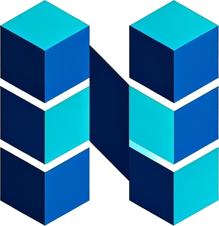

Objetivo
Transformar os centros de distribuição convencionais em ecossistemas de armazenagem inteligente: conectar centenas de sensores industriais e câmeras IP em tempo real, com latência crítica abaixo de 25 ms.
Firjan SENAI Maracanã · Projeto Integrador · Técnico em Redes de Computadores

Seu negócio conectado, bloco a bloco.
Infraestrutura IIoT para os centros de distribuição da NexBloc — conectividade, visibilidade, segurança e retorno financeiro em cinco camadas.
Bloco 01 · Apresentação da empresa
A NexBloc atua em infraestrutura e conectividade: módulos sólidos que se empilham para erguer algo maior. Nex de nexo e next; Bloc de blocos — crescimento estruturado, sem improvisar.
Transformar os centros de distribuição convencionais em ecossistemas de armazenagem inteligente: conectar centenas de sensores industriais e câmeras IP em tempo real, com latência crítica abaixo de 25 ms.
A infraestrutura legada — feita apenas para estações administrativas — é incompatível com o volume de tráfego, o tempo de resposta e as exigências atuais de cibersegurança. Confiança não se instala de uma vez: se constrói.
Entrega modular e auditável: cada bloco é testado, documentado e somado à operação — sem paradas e sem surpresas no caminho.
As fotos dos integrantes aparecem aqui — basta colocar as imagens em assets/team/.
Bloco 02 · Infra
A rede da NexBloc é montada em módulos independentes que se integram sem retrabalho — do cabo de cobre à fibra, do switch PoE ao ar industrial.
Cat6A blindado, certificado ponto a ponto por Fluke Networks, e fibra 10 GbE com uplinks SFP+ — fim do gargalo de switching.
Alimentação elétrica pelos próprios cabos (802.3at/bt): até 90 W por porta e -40% em custos de infraestrutura elétrica.
OFDMA, BSS Coloring e TWT para vencer a “gaiola de Faraday” dos galpões — bateria de sensor com vida útil de até 5 anos.
6 VLANs isoladas por perfil + Dual-Stack IPv4/IPv6. Alarmes críticos em DSCP EF com fila LLQ: telemetria nunca disputa banda com vídeo.
Bloco 03 · Monitoramento
Sem monitoramento, a rede opera às cegas. Este bloco dá olhos à infraestrutura: estado, desempenho e tendência — em tempo real.
Coleta criptografada e inventário automatizado de ativos. Dashboards por VLAN mostram temperatura da cadeia de frio, disponibilidade de links e carga dos switches PoE.
Alertas de telemetria priorizados de ponta a ponta. Um atraso significa produto perecível perdido — monitorar é estancar perda.
Simulações na Packet Tracer e medições reais de throughput validam cada bloco antes de entrar em operação. Documentação viva, nomenclatura padronizada.
Latência — VLAN 10 · Sensores
0ms
SLA 25 ms● dentro do limite
Throughput agregado · 24 h
Streaming CFTV estável● sem descarte
Bloco 04 · Cybersegurança
Rede plana e senha compartilhada foram o legado. O novo padrão autentica criptograficamente cada sensor, câmera e porta — e não confia em ninguém por padrão.
802.1X · EAP-TLS · X.509
Bloco 05 · Financeiro
Custo × benefício com números claros: ciclo de vida de 48 meses, economia anual de R$ 202 mil e projeto autossustentável desde o primeiro ano.
R$ 0 mil
CAPEX de investimento
R$ 0 mil/mês
OPEX recorrente
0 meses
Payback (~3,1 anos)
0
ROI no ciclo de 4 anos
+R$ 0 mil
Geração de valor líquido
Economia de R$ 16.833/mês cobre parcelas de ~R$ 8.208 do BNDES Finame 4.0 (8,5% a.a.) — viabilidade financeira comprovada.
“Conexão sólida não é sorte.
É engenharia.”
Obrigado! — Equipe NexBloc · Firjan SENAI Maracanã
contato@nexbloc.com.br · nexbloc.com.br
Use ← → , clique na torre ou role para navegar